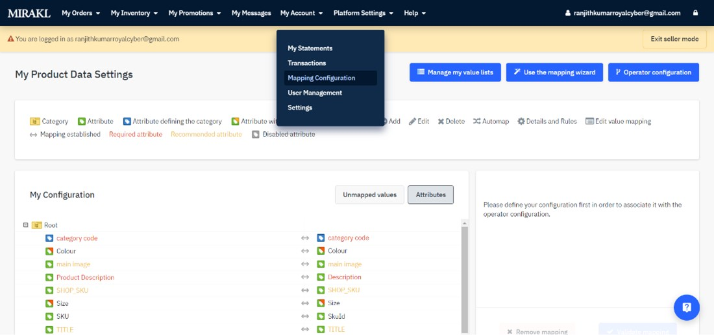

Seller User Guide
Introduction:
The RC Marketplace Connector App helps leverage the data flow between Mirakl and BigCommerce and will help data real time sync up between different systems.
Our Connector App has smart pre-built API connection that takes the pain out of consuming custom platform integrations to handle different Seller Catalog Data like product, offers and let customers place the orders and hold unified management of products, orders etc. within the app.
Here is the step-by-step guide to manage categories, products and order sync up from Mirakl to BigCommerce store. After the app is installed, the app is ready to use.
-
Once the ‘RC Marketplace Connector’ app gets installed, you should see the ‘Mirakl and BC Configuration Form.

-
If you are a seller, you have to select the user type as Seller.
-
Get the Mirakl Credentials (i.e., Mirakl API URL and Seller API key) and enter the credentials in their respective input boxes and click the Connection Check button.

-
Once your connection is validated successfully, then click on the Save Credentials button.

-
Once the credentials are saved you should see the RC Marketplace Connector App Dashboard page
The RC Marketplace Connector home page provides a quick summary of the Products, Offers and Orders sync up between BigCommerce and Mirakl. You can see the total count of each Products, Offers and Orders synced between them.
The User can see the following three sections on the App Dashboard screen:
-
The Products section helps users to know the total number of products synced from BigCommerce to Mirakl.
-
The Offers section helps users to know the total number of offers synced between BigCommerce to Mirakl.
-
The Orders section helps users to know the total number of orders synced between Mirakl and BigCommerce.
Seller Product Sync:
The product listing page shows the list of products synced between BigCommerce to Mirakl.
In the products list table column refers to:
-
File Name: is the unique name of the imported csv file from BigCommerce to Mirakl.
-
Created: is the created date and time of the import csv file from BigCommerce to Mirakl.
-
Import ID: is the unique Mirakl import id of the product csv file from Mirakl.
-
Sync Status:is the status of synchronize between BigCommerce and Mirakl.
-
Action/status :is the live time status of synchronize and shows if an error occurred between BigCommerce and Mirakl.
-
The left side menu helps the user synchronize the data manually from BigCommerce to Mirakl using synchronize buttons as shown in the screenshot below:
Field Mapping from BigCommerce to Mirakl:
-
Step 1: Users must create a custom field in products called ‘marketplace’ and the value should be ‘true’. Only these products will be synced to Mirakl.
-
Step 2: Users must download the csv file from the left side menu Mapping CSV file.
-
Step 3: User login to Mirakl seller account and navigate to My Account-> Mapping Configuration.
 -
Step 4: Users need to map the fields under ‘Use the Mapping Wizard’.
-
Step 5: Users need to Upload the downloaded file (step 1) and click next step.

-
Step 6: Categorization
-
Step 7: Category mapping.

-
Step 8: Attributes mapping.
-
Step 9: Attributes mapping.

-
Step 10: Define rules.

-
Step 11: Summary and validation.

-
Step 12: Once the mapping process is done, then come to the Connector app and click Product(BC to Mirakl) synchronize button, this will synchronize the product from Bigcommerce to Mirakl.
-
Step 13: Users can manually sync the status from Mirakl to BigCommerce by clicking the 'Product Import Status Sync' button.
-
Step 14: Users can check the import status of the products by clicking the View button. Users can also download the error report files, uploaded files, transaction files etc., in the popup window.
Seller Offer Sync:
Offer listing page shows the list of offers Synchronized from BigCommerce to Mirakl.
In the products list table column refers to:
-
Product Name: this is the name of the product which is created in Mirakl.
-
Shop SKU: is the SKU id of the product from BigCommerce.
-
Variant SKU: is the Variant SKU id of the product from BigCommerce.
-
Qty:is the inventory of the products from BigCommerce.
-
Offer Price:This is the Price of the products from BigCommerce.
-
Discount Price: This is the sale price of the products from BigCommerce.
-
Created at: This is the time of the offers synchronized in Mirakl.
-
Action/status :The left side menu helps the user synchronize the data manually from BigCommerce to Mirakl using synchronize buttons as shown in the screenshot below:
-
The left side menu helps the user synchronize the data manually from BigCommerce to Mirakl using synchronize buttons as shown in the screenshot below:
-
Users can also manually Synchronize the offers from BigCommerce to Mirakl by clicking on the Offers (BC to Mirakl) Synchronize button.
-
Users can check the import status of the offers by clicking the View button. Users can also download the error report files from the pop-up window if there is any error in offers or Synchronization.
Seller Order Sync:
The order listing page shows the list of orders synced between Mirakl to BigCommerce.

In the products list table column refers to:
-
Mirakl Order ID: is the unique order ID created when the order is placed in Mirakl
-
Mirakl Order Status: is the status of the order in Mirakl. When the status of the order changes in Mirakl that corresponding status is shown here.
-
BC Order ID: is the order ID generated when the order is placed in BigCommerce.
-
BC Order Status:shows the corresponding status of the order to the user. When the status of the order is changed in BigCommerce that corresponding status is shown here.
-
Processing Status from Mirakl:When the order/status is placed in Mirakl that order needs to be synced up in BigCommerce. Before the order/status is synced from Mirakl to BigCommerce the processing status will be Pending. Once the order/status is synced from Mirakl to BigCommerce the processing status is changed to Completed.
-
Processing Status from BC: When the status is changed in BigCommerce the order status needs to be synchronized in Mirakl. Before the status is synchronized from BigCommerce to Mirakl the processing status will be Pending. Once the status is synchronized from BigCommerce to Mirakl the processing status is changed to Completed.
-
Note:
he below order status from Mirakl is not going to be synchronized from Mirakl to BigCommerce
- Waiting Acceptance.
- Waiting Debit Payment .
- Refused
- Cancelled
The left side menu helps the user synchronize the data manually from BigCommerce to Mirakl using synchronize buttons as shown in the screenshot below:
-
Users can also manually Synchronize the orders/status from Mirakl to BigCommerce and the status from BigCommerce to Mirakl by clicking on the Orders (BC to Mirakl) Synchronizebutton.
-
Users can manually sync the status from Mirakl to BigCommerce and vice-versa by clicking the ,‘Orders Status Sync’ Synchronize button.
Thanks for using RC Marketplace App.